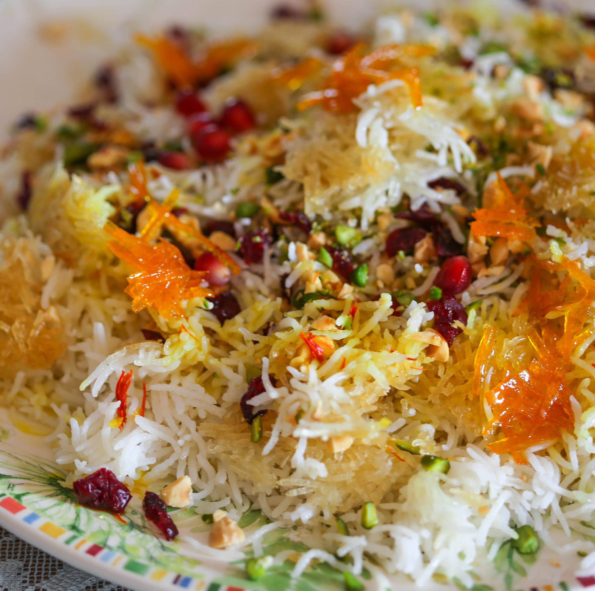

По-моему, нет вкуснее риса, чем рис, приготовленный по-ирански. Он легкий, пушистый, а хрустящая масляная корочка просто сводит меня с ума. Вишенка на торте — «украшения», хотя в менее праздничном варианте можно обойтись без них. За счет чего достигается такая воздушность и легкость? За счет удаления лишнего крахмала при замачивании и пропаривания риса. Да, с этим рисом нужно немного повозиться, но, поверьте, он стоит того!
Шафран: возьмите на заметку способ замачивания шафрана. Именно так с ним поступают, чтобы он лучше раскрыл свой вкус и более экономно использовался. Именно горячая вода (80 градусов, не кипяток) позволяет шафрану лучше раскрыться.
Рис: если вам повезет найти иранский рис — используйте его. Нет — купите просто хороший басмати.
Крышку не открывать все 30 минут — это критично для образования хрустящей корочки (тахдиг) снизу.